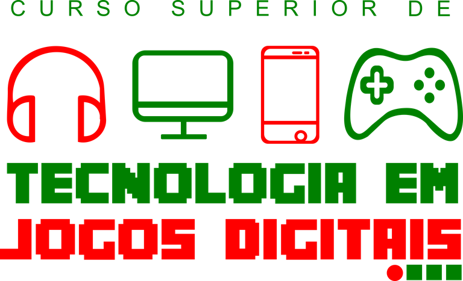
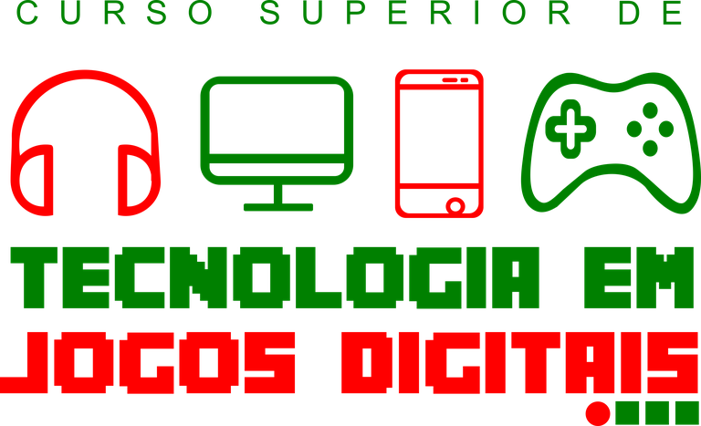

Apresentação do curso
O Curso Superior de Tecnologia em Jogos Digitais tem como objetivo principal formar profissionais
tecnólogos e empreendedores na área de desenvolvimento de Jogos Digitais aptos a desenvolver
games, sistemas panimações direcionadas para diversas áreas do conhecimento como entreterimento,
computação gráfica, dentre outros, sempre de forma integrada, seguindo os padrões de qualidade e
produtividade aprendidos durante a sua formação.
Ficha técnica do curso
| Modalidade | Turno | Duração | Carga Horária |
| Superior | Matutino | 2,5 anos | 2.40 Horas |
Perfil de egresso
Após a formação e finalização do curso, o egresso estará apto a atuar no seguimento de entreterimento
digital, computação gráfica, permitindo-o:
Aperta o play
O Curso Superior de Tecnologia em Jogos Digitais tem como objetivo principal formar profissionais
tecnólogos e empreendedores na área de desenvolvimento de Jogos Digitais aptos a desenvolver
games, sistemas panimações direcionadas para diversas áreas do conhecimento como entreterimento,
computação gráfica, dentre outros, sempre de forma integrada, seguindo os padrões de qualidade e
produtividade aprendidos durante a sua formação.